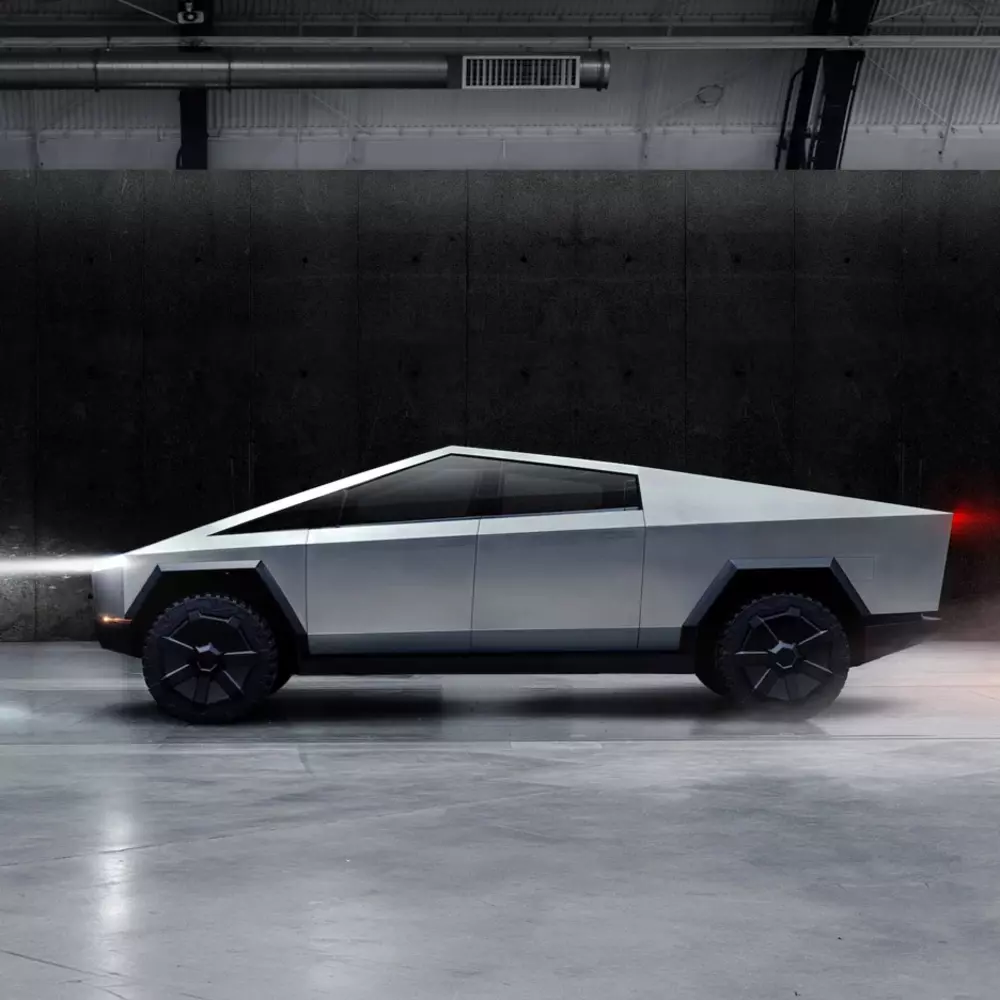

Worlds richest man
Tesla was founded 2003
Companies:
- SpaceX
- Tesla
- The Boring Company
Elon Reeve Musk FRS (/ˈiːlɒn/ EE-lon; born June 28, 1971) is a business magnate and investor. He is the founder, CEO, and chief engineer of SpaceX; angel investor, CEO, and product architect of Tesla, Inc.; founder of The Boring Company; and co-founder of Neuralink and OpenAI.


AI 2022
- Tesla Bot
- Evaluation Infrastructure
- Code Foundations
- Autonomy Algorithms
- Neural Networks
- FSD Chip
TESLA
- Model S
- Model 3
- Model X
- Model Y
- S3XY
- Elon Musk created and sold a video game to a magazine when he was 12 years old. ‘Blastar,’ a space fighting game, was sold for $500 to PC and Office Technology magazine.
- According to Ashlee Vance, author of Elon Musk: Tesla, SpaceX, and the Quest for a Fantastic Future, Musk almost sold Tesla to Google for $11 billion in 2013. Tesla’s future looked bleak at the time, so Musk approached Larry Page, Google’s co-founder and CEO, for a takeover.
- Elon Musk, founder
- Musk’s first business venture was the founding of Zip2, a company that provided newspapers with maps and business directories and was later sold to Compaq for $307 million.